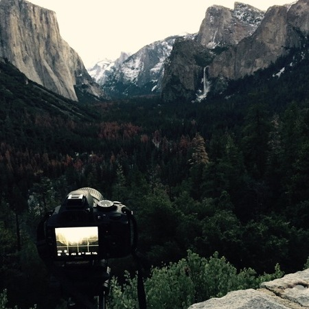

California. Living the dream.
I have lived in California for over 15 years and absolutely have fallen in love with the state! I have traveled around the world and there is no comparable feeling that I experience when I am back in California. There are endless number of beaches, numerous national parks, and a variety of terrains where one can have countless hours of fun. Here are some pictures from my explorations:
Glacier Point
Lake

Waterfall